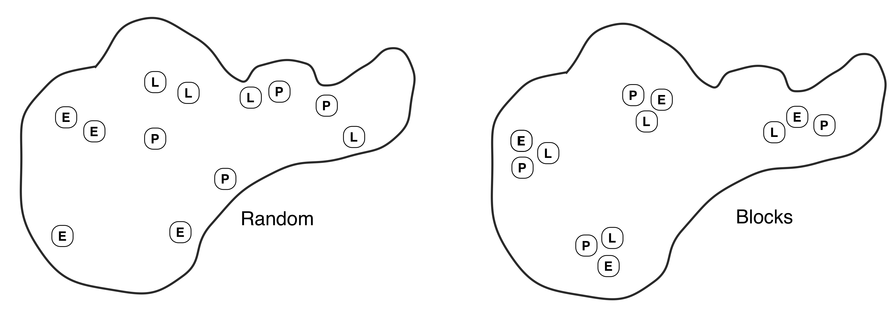

Chapter 19 ANOVA for randomised block designs
Block what you can; randomize what you cannot.
George Box
19.1 Randomised Complete Block Designs
We have only considered one type of experimental ANOVA design up until now: the Completely Randomised Design (CRD). The defining feature of a CRD is that treatments are assigned completely at random to experimental units. This is the simplest type of experimental design. Randomisation is a good thing because it prevents systematic biases from creeping in. A CRD approach is often ‘good enough’ in many situations. However, it isn’t necessarily the most powerful design—if at all possible, we should use blocking to account for nuisance factors. A nuisance factor affects the response—it creates variation—but is of no interest to the experimenter. The variability induced by nuisance factors should be accounted for at the design stage of an experiment if possible. Let’s consider a hypothetical experiment to remind ourselves how blocking works.
Imagine we’re evaluating the effect of three different fertiliser application rates on wheat yields (t/ha). We suspect that our experimental fields’ soil type and management histories are quite different, leading to significant ‘field effects’ on yield. We don’t care about these field effects—they are a nuisance—but we’d like to account for them. There are two factors in play in this setting: the first is the set of experimental treatments (fertiliser application rate); the second is the source of nuisance variation (field). Fertiliser application rate is the ‘treatment factor’, and field is the ‘blocking factor’.
Here is one way to block the experiment. The essence of the design is that a set of fields are chosen, which may differ in various unknown conditions (soil water, aspect, disturbance, etc.), and within each field, three plots are set up. Each plot receives one of the three fertiliser rate treatments at random. If we chose to work with eight fields, the resulting data might look like this:
| Fertilizer | Control | Absent | High | |
|---|---|---|---|---|
| Block | Field 1 | 9.3 | 8.7 | 10.0 |
| Field 2 | 8.7 | 7.1 | 9.1 | |
| Field 3 | 9.3 | 8.2 | 10.4 | |
| Field 4 | 9.5 | 8.9 | 10.0 | |
| Field 5 | 9.9 | 9.1 | 10.8 | |
| Field 6 | 8.9 | 8.0 | 9.0 | |
| Field 7 | 8.3 | 6.2 | 8.9 | |
| Field 8 | 9.1 | 7.0 | 8.1 |
Each treatment level is represented in each field (block), but only once. The experiment is ‘blocked by field’. Now consider these two questions:
Why is this design useful? Blocking allows us to partition out the environmental variation due to different field conditions. For example, the three treatments in field 5 produced a relatively high yield, while the yields in field 7 are consistently below average within each treatment. This among field variation is real, and if we hadn’t blocked the experiment, it would appear as a ‘noise’ component of our analysis. But since we blocked the experiment, and every treatment is present in every block, we can ‘remove’ the block variation from the noise. Less noise means more statistical power.
Why is each treatment level represented only once within blocks? This design gives us the best chance of generalising our results. If we are interested in the overall effect of fertiliser, we should prefer to put our effort into including a range of possible environmental conditions. If we only did the experiment in one field, the results might turn out to be rather unusual. We are not interested in the environmental variation as such. We want to know for a range of conditions, whatever they might be, whether there are consistent differences between fertiliser application rates.
There are many different ways to introduce blocking into an experiment. The most commonly used design—and the one that is easiest to analyse—is called a Randomised Complete Block Design. The defining feature of this design is that each block sees each treatment exactly once. The fertiliser study is an example of a Randomised Complete Block Design (RCBD). The obvious question is: How do we analyse an RCBD? We’ll explore that in moment. First, a small detour….
19.2 Analysing an RCBD experiment
Let’s consider a new example to drive home how an RCBD works. We want to assess whether there is a difference in the impact that the predatory larvae of three damselfly species (Enallagma, Lestes and Pyrrhosoma) have on the abundance of midge larvae in a pond. We plan to conduct an experiment in which small (1 m2) nylon mesh cages are set up in the pond. All damselfly larvae will be removed from the cages and each cage will then be stocked with 20 individuals of one of the species. After 3 weeks, we will sample the cages and count the density of midge larvae in each. We have 12 cages altogether, so four replicates of each of the three species can be established.
On the face of it, this looks like a one-way design with each species as a treatment. The only problem to resolve is how to distribute the enclosures in the pond. The pond is unlikely to be uniform in depth, substrate, temperature, shade, etc… Some of the variation will be obvious, some will not. We have two options: 1) use a CRD and distribute the cages at random, or 2) adopt an RCBD by grouping the cages into clusters of three, placing each cluster at a randomly chosen location, and assigning the three treatments to cages at random within each cluster. These are illustrated below (left = CRD, right = RCBD):

What are the consequences of the two alternatives? If the cages are distributed at random (CRD), they will cover a wide range of variation in these factors. These sources of variation will almost certainly cause the density of midge larvae to vary around the pond unpredictably, increasing the noise in the data. If we group sets of treatments into clusters, we are creating ‘spatial blocks’. There may be considerable differences between blocks, but these won’t obscure differences between the treatments because all three treatments are present in every block.
19.3 Carrying out the analysis with R
We’ll now illustrate how to analyse data from an RCBD experiment using the damselfly predation example.
The data live in the ‘DAMSELS.CSV’ file. The code below assumes those data have been read into a tibble called damsels. Set that up if you plan to work along.
The density of midge larvae in each enclosure after 3 weeks are in the Midge variable (number m\(^{-2}\)); codes for species in the Species variable (levels: Enallagma, Lestes and Pyrrhosoma), and the block identities (A, B, C, D) in the third column:
## Rows: 12
## Columns: 3
## $ Midge <dbl> 304, 464, 320, 578, 509, 458, 680, 740, 630, 356, 390, 350
## $ Species <chr> "Enallagma", "Lestes", "Pyrrhosoma", "Enallagma", "Lestes", "P…
## $ Block <chr> "A", "A", "A", "B", "B", "B", "C", "C", "C", "D", "D", "D"The process of analysing an RCBD experiment is essentially the same as any other type of ANOVA. First, we fit the model using the lm function, and then we use anova to calculate F-statistics, degrees of freedom, and p-values:
We suppressed the output for now. Notice that we have put two factors on the right-hand side of the ~ symbol. This tells R that we want to fit a model that accounts for the main effects of Species and Block. We have to put a + between terms to delineate them (this is not optional).
Careful with your + and *
Notice that we used the ‘plus’ symbol (+) to include the blocking factor in the model: Species + Block. R also allows us to use the ‘times’ symbol (*) in a model formula, e.g. Species * Block. However, this formulation is not appropriate for including block effects. It is used to set up models for more complicated designs that involve something called an interaction term. We’re not going to cover those in this book, so for now, make a mental note of the fact that blocking factors must be included via the + symbol.
And by the way… the + has nothing to do with addition when working a model specification in R.
Here are the results of the global significance tests using the correct ANOVA model for our randomised block experiment:
## Analysis of Variance Table
##
## Response: Midge
## Df Sum Sq Mean Sq F value Pr(>F)
## Species 2 14904 7452 3.0053 0.1246687
## Block 3 208425 69475 28.0182 0.0006306 ***
## Residuals 6 14878 2480
## ---
## Signif. codes: 0 '***' 0.001 '**' 0.01 '*' 0.05 '.' 0.1 ' ' 1What does all this mean? We interpret each line of the ANOVA table in exactly the same way as we do for a one-way ANOVA. The first part tells us what kind of output we are looking at:
## Analysis of Variance Table
##
## Response: MidgeThis reminds us that we are looking at an ANOVA table where our response variable was called Midge. The table contains the key information:
## Df Sum Sq Mean Sq F value Pr(>F)
## Species 2 14904 7452 3.0053 0.1246687
## Block 3 208425 69475 28.0182 0.0006306 ***
## Residuals 6 14878 2480This ANOVA table is similar to the ones we have already seen, except that we now have to consider two lines—one for each term in the model. The first is for the main effect of Species and the second for the main effect of Block.
The F-ratio is the test statistic for each term. These provide a measure of how large and consistent the effects associated with each term are. Each F-ratio has a pair of degrees of freedom associated with it: one belonging to the term itself, the other due to the error (residual). Together, the F-ratio and its degrees of freedom determine the p-value.
The p-value gives the probability that the differences between the set of means for each term in the model, or a more extreme difference, could have arisen through sampling variation under the null hypothesis of no difference. We take p < 0.05 as evidence that at least one of the treatments is having an effect. Here, there is a significant effect of block (p < 0.001), which says that the density of midge larvae varies across the lake. It looks like blocking was a good idea—there is a lot of spatial (nuisance) variation in midge larvae density. However, what we care about is the damselfly species effect. This term is not significant (p > 0.05), so we conclude that there is no difference in the impact of the predatory larvae of three damselfly species.
It is instructive to see what happens if we analyse the damselfly data as though they are from a one-way design. We do this by including only the experimental treatment term (Species) in the model:
## Analysis of Variance Table
##
## Response: Midge
## Df Sum Sq Mean Sq F value Pr(>F)
## Species 2 14904 7452.1 0.3003 0.7477
## Residuals 9 223303 24811.4Look at the degrees of freedom and the sums of squares of the residual (error). How do these compare to the previous model that accounted for the block effect? The degrees of freedom is higher. In principle, this is a good thing because it means we have more power to detect a significant difference among the treatment means. However, the error sum of squares is also much higher when we ignore the block effect. We accounted for much less noise by ignoring the block effect. As a result, the error mean square is a lot lower, and so the F-statistic associated with the treatment effect is also much lower. The take-home message is that designing a blocked experiment and properly accounting for the blocked structure will result in a more powerful analysis.
19.4 Are there disadvantages to randomised block designs?
The short answer is no, not really. There are instances when a randomised block design might appear to be disadvantageous at first glance, but these don’t stand up to criticism:
What if we want to know if the effect of treatment varies across blocks? For example, we might be interested in whether or not damselfly effects on the midge densities are consistent in all habitat areas (e.g. some species may forage more effectively in muddy areas, others where there are more leaves). If this is the question we are trying to answer, we should have designed a different experiment. For example, a design in which we consider treatment combinations of different midge species and habitat characteristics might be appropriate. Fundamentally, the goal of blocking is to account for uncontrolled variation. Designing a blocked experiment and then lamenting the fact that we can’t fully evaluate differences among blocks is a good example of trying to “have our cake and eat it too”.
If the blocking term does not account for some variation, the analysis may be slightly less powerful than just using a one-way ANOVA. This is because there are fewer error degrees of freedom associated with the blocked analysis (we lose a few to the block effects). This argument only works if the block effect accounts for minimal variation. We can never know before we start an experiment whether or not blocking is needed, but we do know that biological systems are inherently noisy, with many sources of uncontrolled variation coming into play. In most experimental settings, we can be fairly sure that blocking will ‘work’. If we choose not to block an experiment, there is no way to account for uncontrolled variation, and we will almost certainly lose statistical power as a result.
The advice contained in the quote at the beginning of this chapter is probably the best experimental design advice ever dished out: “Block what you can; randomize what you cannot.”
19.5 Multiple blocking factors
It is common to find ourselves in a situation whereby we need to account for more than one blocking factor. The simplest option is to combine the nuisance factors into a single factor. However, this isn’t always possible or even desirable. Consider an instance where there is a single factor of primary interest (the treatment factor) and two nuisance factors. For example, imagine that we want to test the efficacy of three drugs (A, B and C) to alleviate the symptoms of a disease. Three patients are available for a trial, and each will be available for three weeks. Testing a single drug requires a week, meaning an experimental unit is a ‘patient-week’. The obvious question is, how should we randomise treatments across ‘patient-weeks’?
We have to design an experiment like this with great care, or there is a risk that we will not be able to statistically separate the treatment effects (drug) and block effects (week & patient). The most appropriate design for this kind of experiment has the following structure:
| Week | Patient | Drug | |
|---|---|---|---|
| 1 | 1 | A | |
| 1 | 2 | B | |
| 1 | 3 | C | |
| 2 | 1 | C | |
| 2 | 2 | A | |
| 2 | 3 | B | |
| 3 | 1 | B | |
| 3 | 2 | C | |
| 3 | 3 | A |
This kind of experimental design is called a Latin square design. It gets its name from the fact that if we organise the treatments into the rows and columns of a grid according to week and patient number, we arrive at something like this:
A B C
C A B
B C AEach letter appears once in each column and row. This is called a Latin square arrangement. Latin square designs (and their more exotic friends, e.g. ‘Hyper-Graeco-Latin square designs!’) have a very useful property: they allow us to unambiguously separate treatment and block effects. The reasoning behind this conclusion is quite technical so we won’t try to explain it. We just want to demonstrate that it is perfectly possible to block an experiment by more than one factor, though this needs to be done with care.